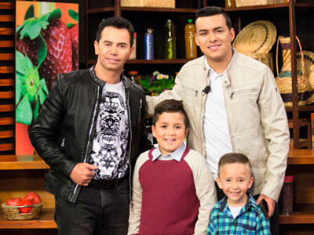
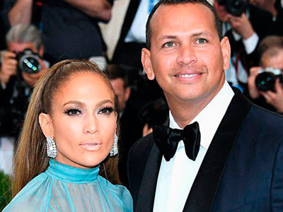

Chismes

CHAMPETERO VERSÁTIL
Una gran sorpresa se llevarán los seguidores del champetero Twister “El rey” quien en su más reciente sencillo demostrará toda su versatilidad, apostándole a un nuevo género musical junto a uno de los artistas más reconocidos de la salsa Jerry Rivera.
CAMBIO DE PLANES
Con todo listo, locación, modelo y concepto, faltando un día para grabar el video de –No me da la talla– , Alexis Escobar decide cambiar su locación por el barrio Morabia en Medellín, donde reside su tío, se enamoró de este lugar y no importó lo que ya estaba listo, hasta la modelo cambió, el resultado es un éxito.
¡NO HA CAMBIADO NADA!
Después de una pausa musical Mauricio Rivera llega con toda la energía que lo caracteriza promocionando su nuevo sencillo –No ha cambiado nada– en compañía de Karen Méndez cantante y youtuber argentina. Próximamente estará de gira a nivel internacional.
“BAYONATOS” SÚPER CLÁSICOS
El nuevo trabajo discográfico que llevó cuatro años en realizarse está dando frutos para Dubán Bayona junto a su acordeonero Harold Ortega quienes retoman clásicos vallenatos como –La sirena encantada-, –La dueña de mi suerte– y –Volver-, dieciséis temas en total, llevarán a su público a través de una gira por Europa, Argentina y Paraguay.
POPULAR FT VALLENATO
Paola Jara está cada vez más cerca de la familia Calderón, pues nos enteramos que prepara una nueva canción junto a Daniel Calderón, el hijo de su actual pareja. ¿Con qué nos sorprenderán? Seguramente será todo un éxito.

¡REGALANDO MILLONES!
Cuatro niños fueron los felices ganadores del concurso de Jhonny Rivera y Yeison Jiménez que premiaba el vídeo más creativo de su canción –Siga Bebiendo-. ¿Qué ganaron? Presentarse con ellos en un concierto y además $1´000.000 para cada dúo.
UN AMOR A DISTANCIA
Lamentamos desilusionar a los admiradores de la bella actriz Megumi Haseben pues ¡Tiene novio y es muy guapo! Se llama Eduardo Anillo y aunque vive en París, la pareja está felizmente enamorada.
TRABAJAN EN NUEVO ÉXITO
Pequeño Juan y Mr. Dec conocidos como Golpe a Golpe, recientemente estrenaron su sencillo –Conmigo-, pero como buenos colombianos no paran de trabajar. ¡Prepárense! Porque pronto nos estarán presentando –Aventurero– una canción en la que colaboraron con el reconocido artista urbano Yelsid.
¡NO SABE INGLÉS!
El desconocimiento del segundo idioma le hizo pasar a Greeicy Rendón un momento bastante desagradable, tanto así que tuvo que probar un plato que nunca imaginó, al no saber inglés y tampoco entender el menú del restaurante tuvo que desayunar “huevos con sabor a chucha” así lo dejó claro en sus redes sociales.
¡YATRA LO VUELVE HACER!
Su víctima fue Luisa Fernanda W, así es, la Youtuber lo invitó a grabar con ella un vídeo para su canal, y cuando estaban por finalizar el clip, Sebastián hizo de las suyas robándole un beso. ¿Esta vez estará enamorado?

¿CUÁNTO CUESTA SU SONRISA?
En esta ocasión el costo de “verse bien”, fue bastante alto, 15.000 dólares se gastó el regaetonero J Balvin comprándose un “adornito” para sus dientes, nada más y nada menos que unos grills adornados con diamantes de 7 quilates, pero en Mi Gente Tvdecidimos hacer cuentas y con su respectivo diseño el artista pagó aproximadamente unos 50.000.000 de pesos.
¡NO SE BAÑA!
Jessica Cediel, en esta ocasión decidió hablar sobre una rutina que implementó desde hace unos días ¡No bañarse! por lo menos un día a la semana y no solo eso pues también invitó a sus seguidores para que ellos también se unan a su iniciativa. Todo por ayudar al medio ambiente.
¡LO SABEMOS TODO!
Cabello largo, barba y dreadlocks, estos fueron los aspectos que enamoraron a Valentina Lizcano, el nuevo amor de la entrenadora es el reconocido músico y compositor León Kandela. Ya varios eran los rumores de la posible relación que esta pareja mantenía, sin embargo fue una fotografía publicada en las redes de ella la que lo confirmó todo.
CEPEDA EN TABLAS
Llega un nuevo formato musical donde el artista Andrés Cepeda nos dejará ver una faceta que dejó hace algún tiempo Cepeda en Tablas Mil Historias que Contar, será una combinación de música, teatro y humor. Con la participación de Yury Vargas y Jhon Alex Toro quienes encarnarán los personajes de las historias de cada canción de Andrés.
¡TODO UN LLANERO!
Inició su carrera musical cantando en un restaurante, muchos pensarán que lo suyo siempre ha sido el género urbano o quizá el pop, pero no es así, Juan de la agrupación Piso 21 se dejó cautivar con la música llanera, es gracias a esta pasión de donde proviene su nombre artístico “Llane”.
CASTING EN CABARET
Un espectáculo cómico musical que reúne a seis guapos y talentosos actores. Brian Moreno, Carlos Hurtado, Alejandro Aguilar, Orián Suárez, Edwin Garrido y Daniel Calderón quienes los harán morir de risa con las ocurrencias de esta elocuente y entretenida obra.
¡No te la puedes perder!
¡NUEVA COLABORACIÓN!
Nacho nos contó que su nueva colaboración tiene toque colombiano, pues junto a Manuel Turizo presentará –Déjalo-, una canción para aquellas mujeres que no reciben de un hombre el cariño que se merecen.
¿SE BESARON?
Los artistas dieron mucho de qué hablar pues mientras se presentaban en una ceremonia benéfica en Nueva York, Marc Anthony se dejó llevar por el momento y le dio un beso a Maluma pero ¡no se preocupen puso su mano en el medio!
¡BIENVENIDO CIRO!
Leo Messi y su esposa Antonella están felices con la llegada de su tercer hijo Ciro, el bebé nació el 10 de marzo de 2018 y tiene feliz a toda la familia. ¡Ahora se pondrán en la tarea de buscar la niña de la casa!

FELIZ Y ENAMORADA
Jennifer López habló de su relación con el ex jugador de beisbol Alex Rodríguez y al parecer todo marcha muy bien, aunque aún no quiere forzar nada, la cantante aseguró que se volvería a casar. ¿Será que regresa al altar por tercera vez?
AL RITMO DE “X”
Bailando y cantando en español, Will Smith felicitó a Nicky Jam y a J Balvin por su más reciente éxito “X”, sin duda alguna la canción ya hace parte de la playlist personal del actor.
¡AHORA EN LA PANTALLA GRANDE!
Así es, Rubén Blades presentó en Estados Unidos un documental sobre su vida, en donde muestra desde facetas íntimas y personales hasta la trasformación que requiere al subirse a un escenario. Este trabajo se titula “Yo no me llamo Rubén Blades” y estuvo dirigido por Abner Benaim.